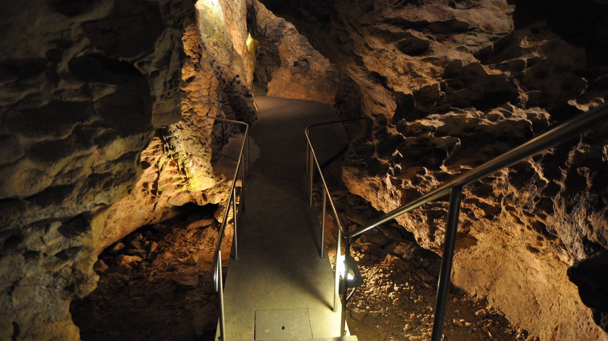
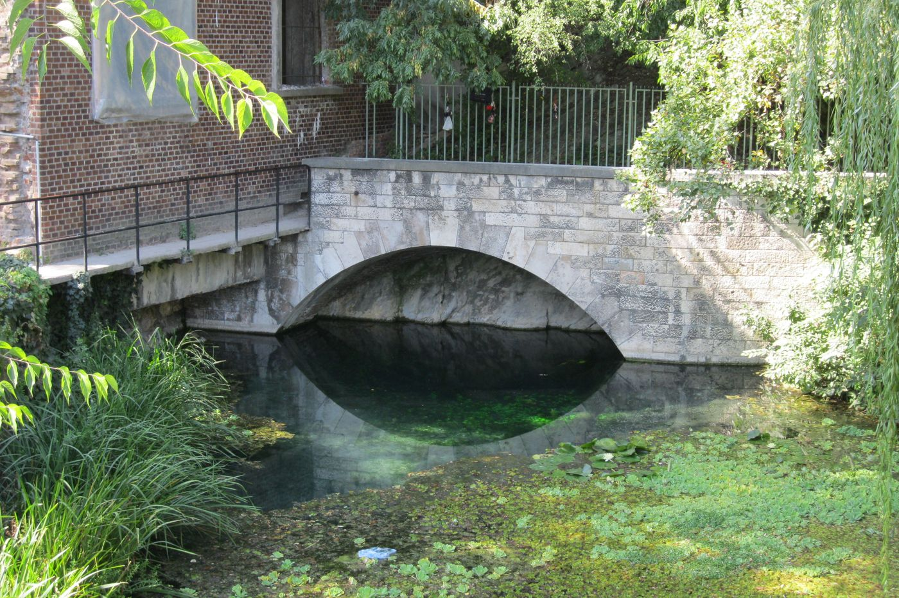

Mi folyik Budapest alatt? Egy barlang, amit ma is csak búvárok járnak
A budai barlangokat nem egyszerűen a felszínről érkező víz oldotta ki: a mélyből feláramló meleg víz kellett hozzá. A Molnár János-barlangban ez a munka ma is zajlik.

Lehet, hogy miközben ezt olvasod, Budapest alatt épp egy búvár úszik egy elárasztott járatban. A víz körülötte 20–23 fokos termálvíz. A barlangnyilvántartás szavaival: „A falakat gömbüstök és hévforráscsövek díszítik, mélyebben fekete, mangános bevonat borítja.” A Molnár János-barlangot a nagyközönség nem látogathatja: javarészt víz alatt van, csak búvárok járják, és a feltárása ma is tart.
Leél-Őssy és Virág 2018-as tanulmánya szerint a főváros területén 176 barlang található. A Budai-hegység egészében 239-et tartanak számon, ebből 102-t a Rózsadomb térségében. Mi vájta ki ezeket az üregeket, és mi folyik most a mélyben?
Ötszáz kiépített méter
A budai föld alatti térkép az utóbbi évtizedekben sokat nőtt. A Rózsadomb térségében az 1995-ben ismert 30 kilométeres járathossz csaknem a duplájára, 55 kilométerre növekedett. A barlangok persze nem nőttek meg, a feltárás jutott tovább: a tanulmány szerint főként a fejlődő kutatási módszerek és a szaporodó hegyvidéki építkezések hoztak új szakaszokat.
A legnagyobb rendszer a Pál-völgyi-barlangrendszer, Magyarország leghosszabb barlangja. A nemzeti park mintegy 32 kilométert ír, a hivatalos nyilvántartás 30 712 métert tart számon, ezért a pontos hossz forrásfüggő. Eredetileg nem is egyetlen barlang volt: a Pál-völgyi-, a Mátyás-hegyi-, a Hideg-lyuk és a Harcsaszájú-barlang összekötésével állt össze. Ebből a hosszból 500 méter van kiépítve. A kiépítetlen szakaszokon kalandtúrák is járnak, és a kutatás is ott folyik.

A Pál-völgyi-barlangot 1904-ben fedezték fel egy azóta felhagyott kőfejtőben, a Szemlő-hegyi-barlangra pedig 1930 őszén, szintén kőfejtés közben bukkantak rá. Az előbbi egyórás, vezetett túrán járható be. Az utóbbi ma ismert hossza 2,2 kilométer, kiépített részén pedig kerekesszékkel is látogatható. Az egyikben egész évben 11, a másikban 12 fok van. Mindkettő száraz, látogatható barlang.
A víz alulról jött
Azt gondolnánk, hogy a víz felülről befolyik, és lassan kimossa a kőzetet. A budai barlangoknál ez a kép nem elég. A Pál-völgyi-barlang a cseppköveiről lett híres, pedig a nemzeti park szerint „sokkal jellemzőbbek rá a magas, hasadékszerű folyosók, a nagy szintkülönbségek és a hévizes eredetű, gömbszerű oldásformák”.
A Pál-völgyi-barlang üregeit a mélyből feláramló meleg víz alakította ki, a nyilvántartás szerint a beszivárgó hideg vízzel keveredve. A szakirodalom hipogén barlangképződésről beszél: a szó a mélységi eredetre utal, az epigén pedig a felülről származó csapadékvízre. A mélyről érkező vizek az áramlási útjuk végén fejtik ki az oldó hatásukat, kétféleképpen: a bennük oldott szén-dioxiddal és kén-hidrogénnel, vagy más vizekkel keveredve.
A Rózsadombnál a fő folyamat a keveredési korrózió, a langyos és a meleg vizek találkozása. „Ezeknek a keveredése hozta létre a barlangokat”, mondta Erőss Anita kutató az Élet és Tudománynak adott interjúban. A Gellért-hegynél más a kép. Az interjú szerint az ottani 40 fokos víz nem különböző hőmérsékletű vizek keveredésével jött létre, és a kémiai összetétele is teljesen más, mint az északabbra található termálvizeké. Az ottani barlangokat tehát más folyamat hozta létre. Hogy pontosan milyen, arra a 2016-os interjú csak feltevést ad: a kutatók úgy gondolják, hogy a termálvizekkel együtt érkező kén-hidrogénnek és a mikrobáknak fontos szerepe van.
A Pál-völgyi-barlang üregeit a mélyből feláramló meleg víz alakította ki, a nyilvántartás szerint a beszivárgó hideg vízzel keveredve.
Egy barlang, amely még nincs kész
Erőss Anita szerint azok a folyamatok, amelyek a ma már száraz barlangokat létrehozták, most is nyomon követhetők: „a barlangképző folyamatok ma is zajlanak”. Példa erre a Molnár János-barlang, a nyilvántartás megfogalmazásában „a Budai-hegység egyetlen, jelentős hosszban feltárt aktív hévizes barlangja”.
Nyilvántartott hossza 5887 méter, mélysége 71,5 méter. Eocén kori márgában húzódó, hasadék jellegű járatokból áll. Csak kis része van a felszín felett, és közelíthető meg száraz lábbal. Kialakulásában a nyilvántartás szerint itt is a meleg vizek és a hideg karsztvizek keveredése játszott szerepet.
A Molnár János-barlangot a nagyközönség nem látogathatja: javarészt víz alatt van, csak búvárok járják, és a feltárása ma is tart.

A barlang egy patikusról kapta a nevét, aki már 1856-ban bejárta és felmérte a száraz járatait, elemezte a víz kémiai összetételét, és feltételezte, hogy tekintélyes víz alatti barlangrendszer is létezik. Igaza volt, de a víz alatti feltárás csaknem száz évig váratott magára. A nyilvántartás szerint a víz alatti szakaszok feltárása 1953-ban kezdődött, és 1977-re 420 méterig jutott. Aztán 2002 novemberében megnyílt egy addig ismeretlen járat. Az azóta is tartó merülések alapján a barlang hossza a becslések szerint eléri a 6 kilométert. Ez becsült érték, a nyilvántartott hossz továbbra is 5887 méter.
Miért meleg ez a víz?
Magyarország alatt a föld gyorsabban melegszik lefelé, mint a világ nagy részén: a Magyar Geotermális Egyesület szerint az országos geotermikus gradiens megközelítőleg 45 fok kilométerenként, szemben az átlagos 20–30 fokkal. Ezer méter mélyen átlagosan 55–60, kétezernél már 100–110 fok várható. Ezek országos számok, a budai vizek hőmérsékletét közvetlenül nem magyarázzák.
Budapestnél a csapadékvíz beszivárog a hegyekben, a mélyben felmelegszik, majd a hegylábaknál meleg forrásokban lép a felszínre. A meleg víz aztán találkozik a hideg karsztvízzel. A kőzet is más, mint az ország nagy részén: az Alföld, a Kisalföld és a Dél-Dunántúl alatt a vizet felső-pannóniai homok és homokkő tárolja, a Pál-völgyi-barlangrendszer viszont felső-eocén korú mészkőben, alárendelten márgában, törésvonalak mentén alakult ki.
A rendszer neve Budai-termálkarszt. A források a hegység pereménél fakadtak, és nemcsak melegek voltak, langyosak és hidegek is. Erőss Anita három helyet sorol fel. Északon csak langyos, körülbelül 20 fokos források fakadtak. A Rózsadombnál langyos, körülbelül 20 és meleg, nagyjából 60 fokos vizek fordultak elő. Délen, a Gellért-hegy környékén csak meleg, 40 fokos vizek fakadtak. A rózsadombi és a gellért-hegyi rendszer az interjú szerint két külön egységet alkot.
Búvárok és fürdőzők
A Molnár János-barlangban fakadó 20–23 fokos termálvizet a Lukács fürdő hasznosítja. A kapcsolat a nevekben is ott van: a nyilvántartás „Lukácsfürdő forrásbarlangja” és „Malomtavi-barlang” néven is ismeri. A búvárbázis leírása szerint a forrásvíz a mesterséges Malom-tavat táplálja.
Aki beül a Lukácsba, ugyanannak a rendszernek a vizében ül, amelyben a föld alatt búvárok merülnek. Többet a források nem mondanak: azt nem mondják ki, hogy a medencében pontosan a barlang vize volna.
Mi folyik tehát Budapest alatt? Meleg víz, amely alulról jön, és a kőzetben kioldotta magának a helyet.
 Videón is megnézhetedMi folyik Budapest alatt? Egy barlang, amit ma is csak búvárok járnak
Videón is megnézhetedMi folyik Budapest alatt? Egy barlang, amit ma is csak búvárok járnak
Források
- Országos Barlangnyilvántartás: Molnár János-barlang
- Országos Barlangnyilvántartás: Pál-völgyi-barlangrendszer
- Duna–Ipoly Nemzeti Park: Pál-völgyi-barlang
- Duna–Ipoly Nemzeti Park: Szemlő-hegyi-barlang
- Leél-Őssy és Virág (2018), Földtani Közlöny 148/1
- Interjú Erőss Anitával, Élet és Tudomány
- Magyar Geotermális Egyesület
- Molnár János-barlang búvárbázis
A cikk a videó állítástáblájára épül, és külön tény-, nyelvi és jogi bírálaton ment át. A kivágott képek az eredeti licencük alatt használhatók tovább. Hogyan ellenőrzünk?
Hibát találtál? Írd meg nekünk, megnézzük.